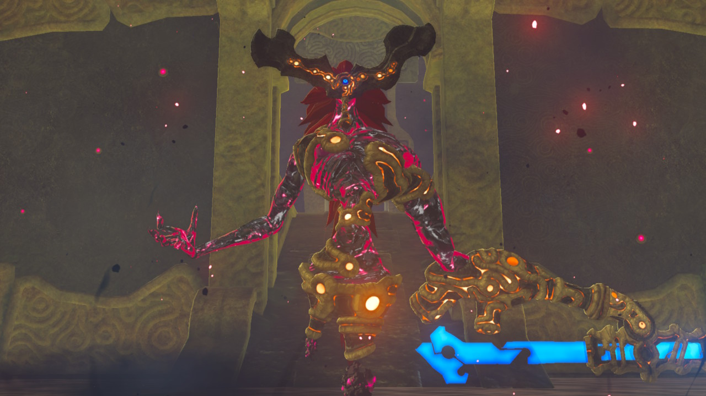
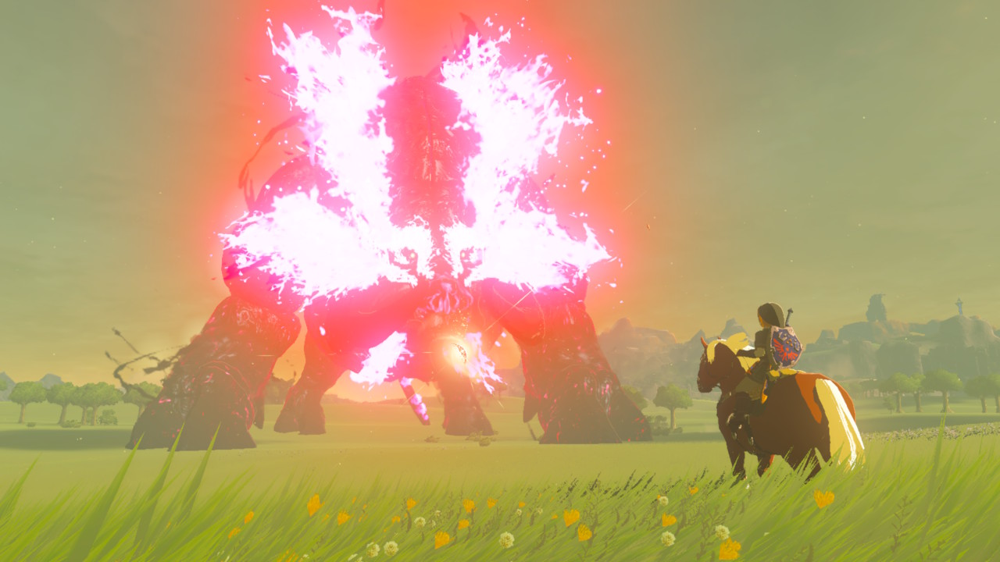
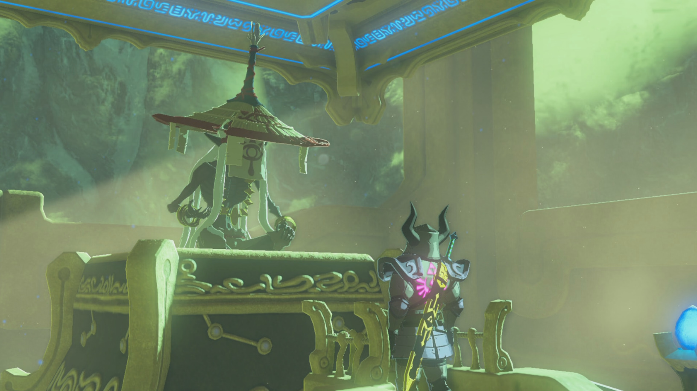

BOTW : Les boss
Sommaire de la page / Liste des boss :
- Ombre d'Eau de Ganon
- Ombre de Feu de Ganon
- Ombre de Vent de Ganon
- Ombre de Foudre de Ganon
- Ganon le Fléau
- Ganon, Créature maléfique
- Le Grand Kohga
- Guide Miz'Kyosia
Ombre d'Eau de Ganon
Le boss du donjon de la créature divine Vah'Ruta. Armé d'une lance gigantesque qui peut faire des ravages, il est spécialisé dans les attaques de mélée longue portée et les attaques de glace. Pour le vaincre venez armé d'un arc et d'un bon nombre de flèches selon vos talents en archerie. Il est aussi grandement recommandé de venir avec des flèches archéoniques, celles-ci lui feront de gros dégâts.

Le Combat :
- Phase 1 : Le Boss ne possède que 4 attaques durant cette phase : il peut lancer
son arme, balayer toute la surface devant lui d'un coup de lance, attaquer de la
pointe de la lance vers l'avant, et planter sa lance dans le sol. Le combat est
relativement simple : vous pouvez attaquer en mélée en esquivant/contre-attaquant
et à distance en visant son oeil.
- Phase 2 : S'active une fois la barre de vie descendue à 50%. Le Boss innonde la
salle ne laissant plus que 4 plateformes flotantes pour se battre. Il se téléprote
de plateforme en plateforme et utilise 2 nouvelles attaques en plus des anciennes :
il jete des blocs de glace sur Link et tire des rayons laser par son oeil. Pour
le contrer, utilisez le module Cryonis pour vous débarasser des blocs lancés et
tirer sur son point faible et/ou renvoyez ses lasers en contrant avec un bouclier.
Une fois le combat terminé dans le scénario principal, vous obtiendrez le pouvoir de la "Prière de Mipha".
Pour les plus téméraire, il est possible d'affronter le boss à nouveau dans le DLC2 "Ode aux Prodiges".
Durant le combat, vous n'aurez accès qu'à l'équipement qui vous sera donné :
- Lance d’écaille radieuse x1
- Lance de cérémonie x2
- Arc zora x1
- Flèches simples x10
- Perche x1
- Champignon d'Hyrule x1
- Fruit de lotus tempo x1
- Tenue zora
PS : Le combat est encore plus dur en mode expert car votre équipement se brise plus rapidement et le boss régénère ses PV rapidement. Un vrai calvaire dont la deuxième phase vous demandera concentration. Vous pourriez même vous retrouver dans l'incapacité de le blesser si vous consommez toutes vos flèches.
Ombre de Feu de Ganon
Le boss du donjon de la créature divine Vah'Rudania. Armé d'une épee gigantesque qui peut faire de gros dégâts et capable de manier la magie, il est spécialisé dans les attaques de combat et les attaques de feu. Pour le vaincre, venez armés d'un arc et de quelques flèches de glace et archéoniques pour lui faire de gros dégâts.
![Une sorte de construction machine-démon, hybride entre la Malice et l'ancienne technologie Sheikah, créée par Ganon. Elle n'a pas de visage mais possède une longue épée archéonique à la place de sa main droite et des cheveux rouges caractéristiques de chaque incarnation de Malice coiffés de manière à faire penser à une explosion. Malgré son absence de visage, celui-ci est remplacé par un masque noir et plat qui vu de face ressemble à un carré avec deux triangles penchés vers les cotés sur les coins haut droit et gauche. En son centre se trouve un oeil bleu capable de tirer des laser.](../assets/images/botw/ombre_feu.png)
Le Combat :
- Phase 1 : Le Boss ne possède que 3 types d'attaques durant cette phase : il peut utiliser son épée
pour faire des coups latéraux ou verticaux, et tirer quelques boules de feu. Le combat n'est pas très
compliqué : vous pouvez l'attaquer en mélée en esquivant/contre-attaquant et à distance en visant son oeil.
- Phase 2 : S'active une fois la barre de vie descendue à 50%. Le Boss ajoute un effet élémentaire de
feu à son épée et utilise 2 nouvelles attaques en plus des anciennes : il aspire l'air environnant
pour lancer d'énormes boules de feu sur Link et tire des rayons laser par son oeil. Pour le contrer,
utilisez le module Bombe pour le blesser quand il charge sa boule de feu dans les air mais attention,
un bouclier le protège des flèches pendant le chargement. Vous pouvez aussi tirer sur son point faible
et/ou renvoyez ses lasers en contrant avec un bouclier.
Une fois le combat terminé dans le scénario principal, vous obtiendrez le pouvoir du "Bouclier de Daruk".
Pour les plus téméraire, il est possible d'affronter le boss à nouveau dans le DLC2 "Ode aux Prodiges".
Durant le combat, vous n'aurez accès qu'à l'équipement qui vous sera donné :
- Brise-montagne x1
- Arc de chevalier x1
- Flèches de glace x5
- Venaison x1
- Champi armo x1
- Pomme grillée x1
- Tenue de pierre
PS : Le combat est encore plus dur en mode expert car votre équipement se brise plus rapidement et le boss régénère ses PV rapidement. La difficulté du combat n'est cependant pas la plus grande à laquelle s'attendre quand on compare avec d'autres boss.
Ombre de Vent de Ganon
Le boss du donjon de la créature divine Vah'Medoh. Armé d'un canon laser, il est spécialisé dans les attaques à distance et les attaques de vent. Pour le vaincre, venez armé de plusieurs arcs et beaucoup de flèches simples et explosives car le combat se déroulera principalement à distance. Il est aussi grandement recommandé de venir avec des flèches archéoniques, celles-ci lui feront de gros dégâts.
![Une sorte de construction machine-démon, hybride entre la Malice et l'ancienne technologie Sheikah, créée par Ganon. Elle n'a pas de visage mais possède une sorte de blaster archéonique à la place de sa main gauche et les cheveux rouges caractéristiques de chaque incarnation de Malice. Malgré son absence de visage, celui-ci est remplacé par un masque noir et plat qui vu de face ressemble à un carré aux bords arrondis. En son centre se trouve un oeil bleu capable de tirer des laser. Cette créature est aussi accompagnée de quatre projectiles cylindriques volants de forme ovale.](../assets/images/botw/ombre_vent.png)
Le Combat :
- Phase 1 : Le Boss ne possède que 2 types d'attaques durant cette phase : il peut tirer des projectiles
lasers et lancer des tornades. Le combat n'est pas compliqué, juste un peu pénible car le boss reste élevé
dans les airs et ne cesse de se téléporter : vous ne pouvez l'attaquer qu'à distance en visant son oeil
avec des flèches simples ou explosives si possible. Pensez aussi à utiliser les courants ascendants pour
profiter du temps ralenti quand vous tirez avec l'arc.
- Phase 2 : S'active une fois la barre de vie descendue à 50%. Le Boss invoque 4 objets volants sur lesquels
ricochent ses tirs lasers pour attaquer de tous les côtés. Il devient plus imprévisible et augmente la puissance
de ses attaques précédentes et peut désormais envoyer des boules d'air très rapides. Pour le contrer, vous
pouvez utiliser la même technique que lors de la première phase mais aussi tirer sur les invocations volantes
du boss pour les détruire.
Une fois le combat terminé dans le scénario principal, vous obtiendrez le pouvoir de la "Rage de Revali".
Pour les plus téméraire, il est possible d'affronter le boss à nouveau dans le DLC2 "Ode aux Prodiges". Durant
le combat, vous n'aurez accès qu'à l'équipement qui vous sera donné :
- Lame rémige x1
- Arc du faucon x1
- Arc à double encoche x1
- Arc de la dévotion x1
- Flèches simples x100
- Flèches explosives x5
- Tenue piaf
PS : Le combat est encore plus dur en mode expert car votre équipement se brise plus rapidement et le boss régénère ses PV rapidement. La difficulté du combat n'est cependant pas la plus grande à laquelle s'attendre quand on compare avec d'autres boss.
Ombre de Foudre de Ganon
Le boss du donjon de la créature divine Vah'Naboris et l'un des boss les plus dur du jeu. Armé d'une petite épée et d'un bouclier, ce boss très agile est spécialisé dans les attaques de combat-rapproché et sait manier la foudre. Pour le vaincre, maitrisez à la perfection l'art de l'esquive et de la contre-attaque, vous en aurez besoin. Venez aussi avec des boucliers non métaliques pour les parades voire la tenue isolante si vous avez débloqué l'amélioration de protection face à l'électricité.
![Une sorte de construction machine-démon, hybride entre la Malice et l'ancienne technologie Sheikah, créée par Ganon. Elle n'a pas de visage mais possède une petite épée archéonique à la place de sa main droite, un bouclier à la place de la gauche et ses longs cheveux rouges caractéristiques de chaque incarnation de Malice, descendant sur les côtés de sa tête. Malgré son absence de visage, celui-ci est remplacé par un masque noir et plat qui vu de face ressemble à la lame d'un sabre dirigé verticalement vers la gauche. En son centre se trouve un oeil bleu capable de tirer des laser.](../assets/images/botw/ombre_foudre.png)
Le Combat :
- Phase 1 : Bien qu'il n'ait que deux types d'attaque, ce Boss est viscieux ! Alors qu'il est éloigné, il peut se
déplacer à la vitesse de l'éclair pour asséner un coup hyper rapide. Il est aussi capable de lancer des boules
électriques rebondissant sur les murs, le sol et le plafond. Le combat est très difficile si vous n'êtes pas passé
maitre en l'esquive avant de le débuter car il bloque toutes vos attaques au corps à corps et à distance avec son
bouclier. La technique : esquivez pour déclencher des parades ou essayez de figer le boss avec le module Cinétis
assez longtemps pour lui donner quelques coups, vous finirez bien par l'avoir à l'usure.
- Phase 2 : S'active une fois la barre de vie descendue à 50%. Le Boss ajoute un effet élémentaire de foudre à son
épée et utilise 2 nouvelles attaques en plus des anciennes : Il lance des piliers métaliques autour de Link pour
essayer de l'électrocuter ; Utilisez le module Polaris pour déplacer les piliers à côté du Boss pour qu'il
s'electrocute lui-même. Il est aussi capable de tirez des rayons lasers avec son oeil.
Une fois le combat terminé dans le scénario principal, vous obtiendrez le pouvoir de la "Colère d'Urbosa".
Pour les plus téméraire, il est possible d'affronter le boss à nouveau dans le DLC2 "Ode aux Prodiges".
Durant le combat, vous n'aurez accès qu'à l'équipement qui vous sera donné :
- Cimeterre x1
- Longue épée de vertue x 1
- Bouclier des sept joyaux x1
- Bouclier de l'égide x1
- Fruit volt x1
- Venaison x1
- Champi volt x1
- Tenue des Sablons
PS : Le combat est encore plus dur en mode expert car votre équipement se brise plus rapidement et le boss régénère ses PV rapidement. La difficulté du combat est nettement plus grande, de quoi vous occuper pendant un moment.
Ganon le Fléau
C'est la première forme du boss final du jeu se situant au coeur du Château d'Hyrule. Il ressemble à une grosse araignée à 10 pattes, il en utilise 4 pour se déplacer, le reste est utilisé pour vous attaquer : sur son côté droit il a l'épée de l'Ombre de Foudre, une main griffue et l'épée de l'Ombre de Feu tandis que sur le gauche il a la lance de l'Ombre de l'Eau, le canon laser de l'Ombre de Vent et une paire de petits sciseaux lasers. Pour le vaicre, il est recommandé de venir avec la Master Sword, le bouclier Hylia, des flèches archéoniques et des plats de renforcement et de soin.
![Une monstruausité maléfique au corps difforme. Le haut de son corps est à peu près humanoïde avec des cheveux rouges sauvages ressemblant plus à une crinière de lion et barbe sale. Sa tête est en forme de crane et rappelle vaguement le visage de Ganondorf. Le bas de son corps est une aglutination gonflée de Malice à moitié plaquée en armure ressemblant au corps d'un gardien des ruines avec deux de ses membres à quatre griffres dépassant de l'arrière. Attachés à ses autres membres se trouvent les armes signatures des ombres de vent, feu, foudre et d'eau.](../assets/images/botw/ganon_fleau.png)
Le Combat :
Dès le début du combat, selon si vous avez libéré les créatures divines des Prodiges, une partie des points de vie de Ganon lui
seront enlevé (jusqu'à 50%). Vous devrez combattre toutes les Ombres que vous n'avez pas encore terrassé avant qu'il n'apparaisse
dans le cas contraire.
- Phase 1 : Durant cette phase, le Boss utilisera une grande variété d'attaques propres à chacune des Ombres de Vent, Feu, Foudre
et Eau contrables de la même manière que lors de vos combats contre les Ombres. Il se peut que le boss se sente trop menacé pendant
le combat, il grimpera alors sur les murs pour vous attaquer. Vous pourrez alors le faire tomber grâce à quelques flèches bien
placées ou le pouvoir d'Urbosa.
- Phase 2 : Dans cette deuxième phase, Ganon s'entoure d'un bouclier qui enflame sur corps et le protège de toute attaque. même les
flèches archéoniques ne lui feront rien. Pour le toucher, il faut donc : soit effectuer des esquives parfaites pour contre-attaquer,
soit utiliser la Colère d'Urbosa pour le paralyser et le rendre vulnérable pendant quelques secondes.
Ganon, Créature maléfique
Un phacochère géant et ténébreux à la crinière enflammée apparaît dans la Plaine d'Hyrule! C'est la forme ultime de Ganon et étonnament l'un des boss les plus simples du jeu... Le combat n'est vraiment pas compliqué : dès le début, la princesse Zelda vous confie l'arc de lumière aux munitions infinies. Montez sur votre cheval et visez les zones brillantes sur le corps du boss, c'est tout ce que vous avez à faire. Même l'esquive n'est pas un problème puisque sa seule attaque est de cracher un énorme rayon rouge qui vous ratera les 90% du temps. Pour gagner, il suffira de tirer dans l'oeil sur sa tête quand celui-ci sera révélé.

Le Grand Kohga
C'est un boss qui n'en est pas vraiment un. Chef du clan des Yiga, ses attaques consitent à vous lancer des boules toujours plus grandes et dangereuses jusqu'à ce qu'il en invoque une si énorme qu'elle fini par lui revenir dessus et le faire tomber au fond du gouffre au milieu de l'arène.

Le combat consiste en trois phases :
- Phase 1 : Kohga se protégera derrière un bouclier qu’il abaissera pour vous lancer une boule de pierre. Tirez lui dessus quand
le projectile apparait pour qu'il lui retombe dessus et le fasse s'écraser au sol.
- Phase 2 : S'active une fois la barre de vie descendue à 75%. Kohga fait apparaître deux boules qu’il fait tourner autour de lui.
Attendez qu’il dissipe son bouclier et tirez-lui dessus lorsqu'une des boules est au-dessus de lui pour qu’il s’assomme.
- Phase 3 : Kohga fait apparaître une grosse boule avec des piques, en métal. Utilisez le module Polaris pour attraper la boule et
attaquer Kohga avec jusqu'à la fin du combat.
Guide Miz'Kyosia *
* Exclusif au DLC2 "Ode aux Prodiges"
- "EX La chanson de Mipha"
- "EX La chanson de Revali"
- "EX La chanson de Daruk"
- "EX La chanson d'Urbosa"

Le Combat :
- Phase 1 : Le Boss se téléporte et charge Link. Verrouillez-vous sur lui et esquiver au bon moment pour contre-attaquer.
- Phase 2 : Le Boss crée plusieurs doubles de lui-même. Frapper le bon pour lui infliger des dégâts.
- Phase 3 : S'active une fois que la barre de vie est descendue de moitié. Le Boss va se mettre à grandir, voler et se déplacer sur
le terrain. Il tire des rayons laser et des boules métaliques, renvoyez les pour lui infliger des dégâts.
- Phase 4 : Le Boss se met à marcher sur la plateforme et matérialise des clones. Frappez ses clones puis ses jambes pour rapidement
terminer le combat.
Une fois Miz'Kyosia vaicu, vous obtiendrez la fameuse moto du DLC le *"Destrier de Légende 0.1"*, le Souvenir de l'Ode aux Prodiges ainsi que la Photo des Prodiges. Une récompense bien méritée quoiqu'un peu déçevante quand on sait que le Guide Miz'Kyosia est l'un des boss les plus durs du jeu.